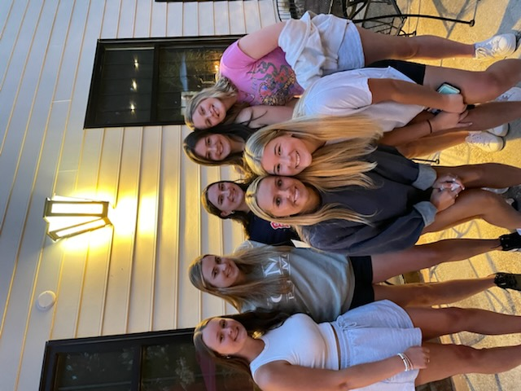

My Life at Elon
I am already loving my life at Elon so far. Freshman year I lived in the Carolina dorm and made some of my best friends there. In my Elon 101 class, my professor helped me decide that I wanted to pursue my original plan of a Cinema and Television Arts major with a minor in French. I tried to add on a Business Administration minor but then realization it would be too much work for something I am not that interested in. I started taking my first few Communications classes already and I loved them all. 
Cinema and Television Arts
Elon University is known for their Communication school and their Cinema and Television Arts major. This was obviously very attractive to me when I applying here because I had been interested in film for my entire high school career. In my 4 year plan I have already decided that I would like to pursue a BFA in the major. This requires me to study abroad to Los Angeles, CA during a spring semester where I will take classes half the week and do an internship half the week.
French
I have always been interesed in pursuing the French language since I started learning it in 6th grade. I knew I wanted to be fluent and when it got time to apply to colleges, my French teachers in high school kept telling me that I should try to minor in it. After making the decision to minor in it I started to look into study abroad programs. Unfortuantely, I am not able to study abroad for a whole semester since I am already going to LA for a semester. Luckily, there are many different internship programs that I can do in Paris for the summer so I will be applying to one this semester so I can go this coming summer!